Referensi Utama: Kurose & Ross — Computer Networking (8th Ed)
Dosen Pengampu:
Bagian 1: Konsep Network Layer
Bagian 2: Subnetting & VLSM
Bagian 3: IPv6
Bagian 4: DHCP
Tanggung jawab utama: Mengirim paket dari host asal ke host tujuan melintasi jaringan global.
Dua Fungsi Kunci (Kurose):
Routing (Control Plane)
Seperti Anda merencanakan rute perjalanan dari Jakarta ke Bandung menggunakan Google Maps sebelum berangkat.
Forwarding (Data Plane)
Seperti Anda sampai di simpang susun jalan tol, membaca rambu petunjuk jalan, lalu memutar setir ke pintu keluar tol yang tepat.
Bagaimana Routing bekerja dengan IP Address?
103.x.x.0), lewat
jalur A". Detail IP perangkat (Pengelompokan IP) diatur oleh Subnet
Mask.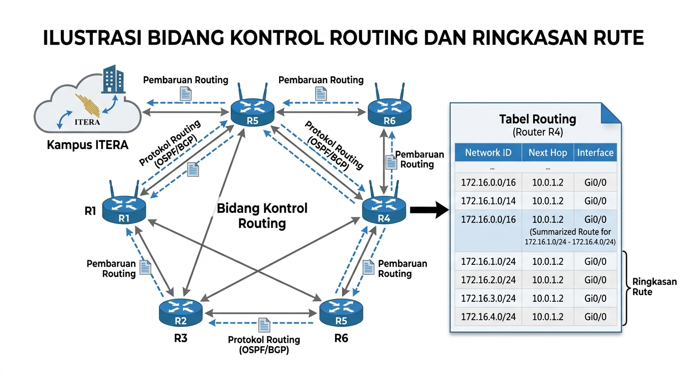
Bagaimana Forwarding bekerja secara lokal?
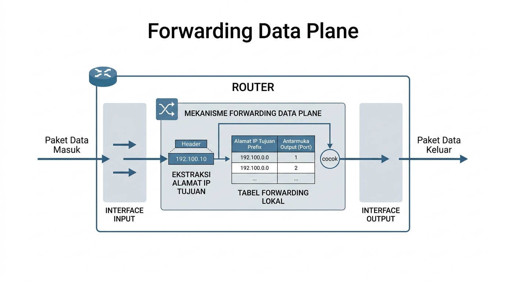
Pengenal numerik 32-bit (IPv4) yang dipasangkan pada antarmuka (interface) host/router.
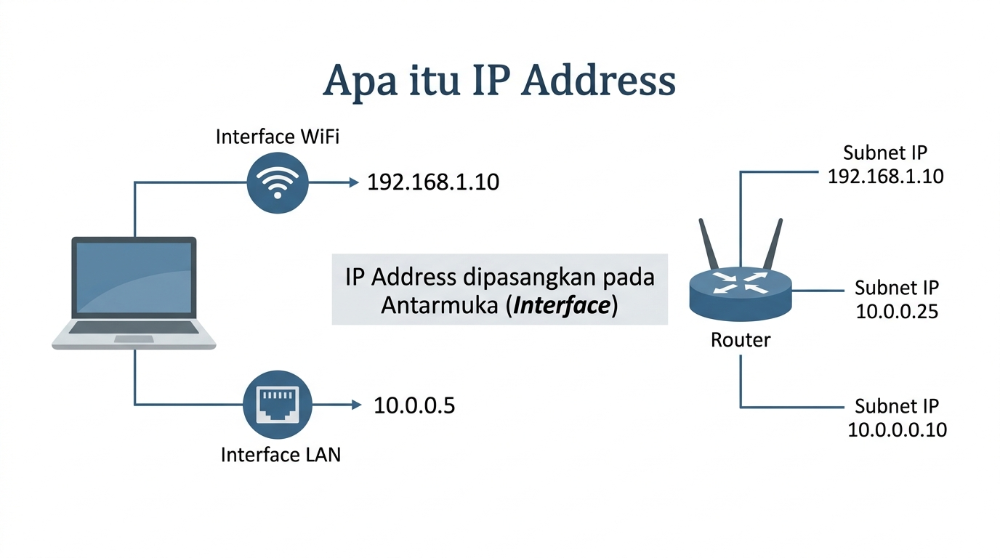
Setiap IP address (IPv4) secara logis terbagi menjadi 2 bagian:
Bagaimana komputer tahu batas pemisahnya? Disitulah peran
Subnet Mask! (Sering juga ditulis dengan tanda slash atau
prefix, misal: /24 yang akan kita bahas nanti).
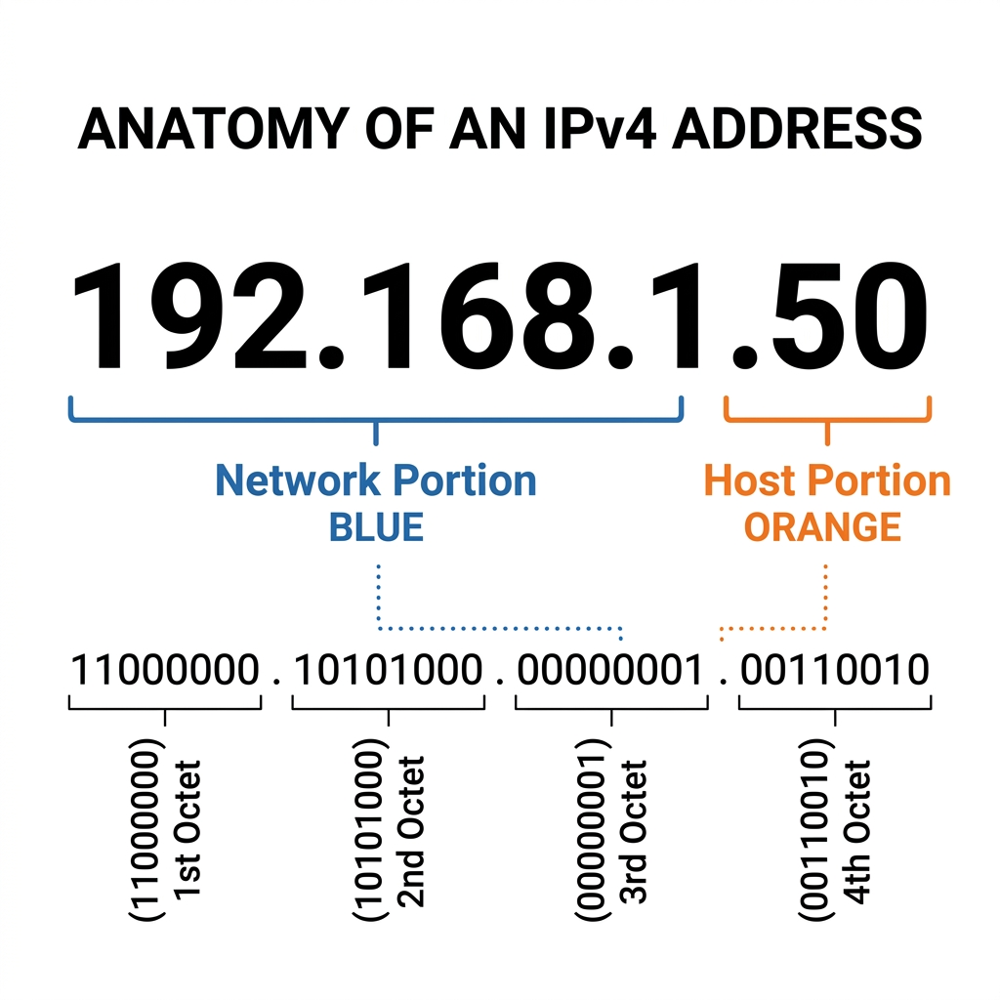
Pada awalnya, IP Address dibagi secara kaku ke dalam 5 kelas. Selain itu, ada rentang IP Private yang tidak bisa di-routing di internet global (hanya untuk LAN).
| Kelas | Range IP Global | Subnet Mask (Default) | Range Private IP Address |
|---|---|---|---|
| A (Skala Besar) | 1.0.0.0 — 126.255.255.255 | /8 (255.0.0.0) | 10.0.0.0 — 10.255.255.255 |
| B (Skala Menengah) | 128.0.0.0 — 191.255.255.255 | /16 (255.255.0.0) | 172.16.0.0 — 172.31.255.255 |
| C (Skala Kecil) | 192.0.0.0 — 223.255.255.255 | /24 (255.255.255.0) | 192.168.0.0 — 192.168.255.255 |
| D (Multicast) | 224.0.0.0 — 239.255.255.255 | Tidak didefinisikan (N/A) | (Semua digunakan untuk Multicast) |
| E (Eksperimental) | 240.0.0.0 — 255.255.255.255 | Tidak didefinisikan (N/A) | (Untuk riset & eksperimen) |
Unicast (Satu-ke-Satu):
Mengirim paket dari satu IP pengirim ke satu IP tujuan spesifik.
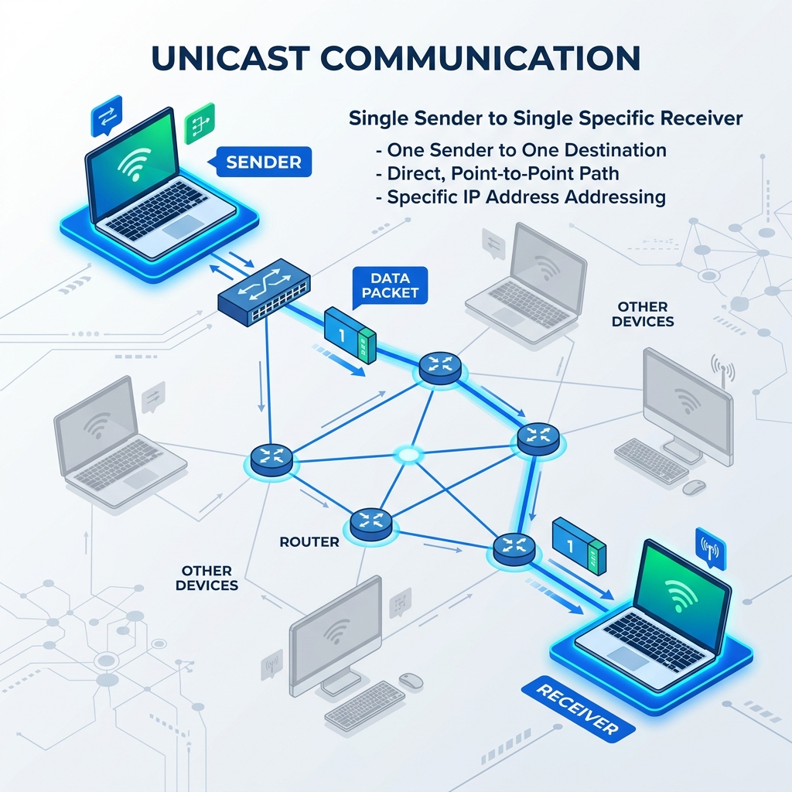
Broadcast (Satu-ke-Semua):
Mengirim paket dari satu pengirim ke seluruh perangkat di jaringan yang sama.
255.255.255.255. Router akan menolak meneruskan paket ini ke luar jaringan
lokal.
192.168.1.255). Mengirim ke semua host pada subnet
spesifik.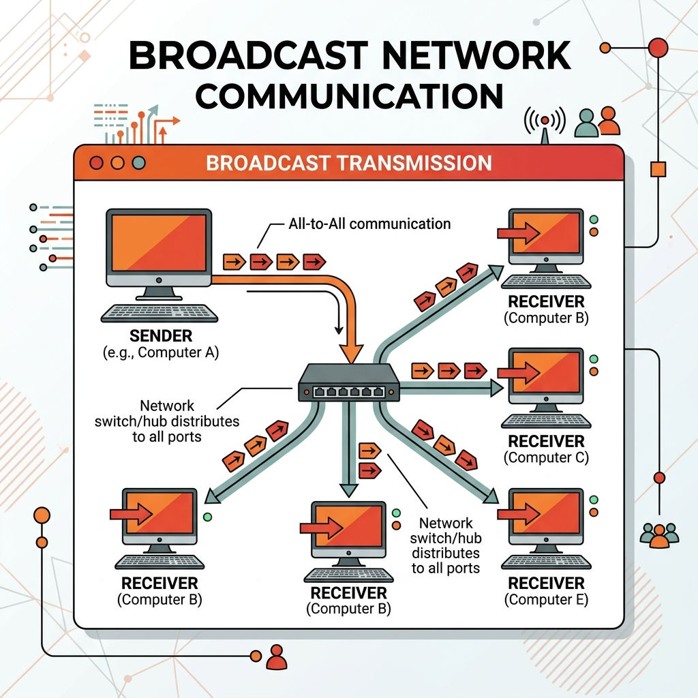
Multicast (Satu-ke-Banyak-Grup):
Mengirim paket dari satu pengirim ke sekelompok host tertentu yang berlangganan (subscribe) pada grup tersebut.
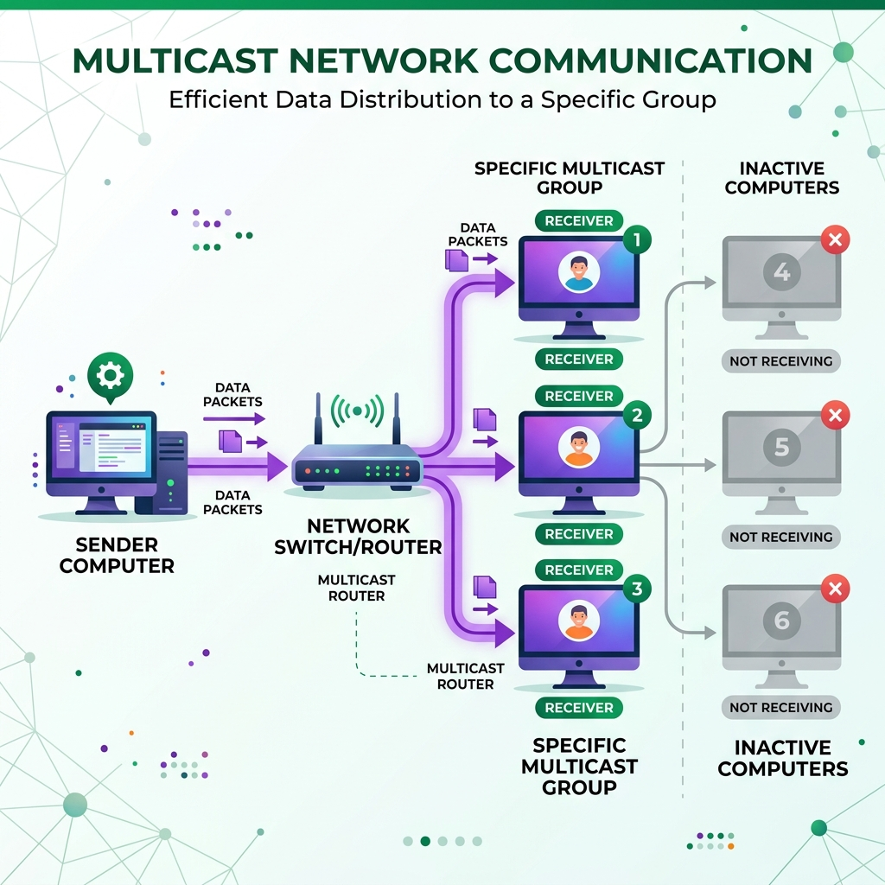
Untuk memahami subnetting, kita wajib menguasai konversi biner ke desimal (dan sebaliknya) per oktet. IP V4 terdiri dari 4 oktet (32 bit).
Contoh: Konversi IP 172.16.50.126 ke Biner
Hasil Biner:
10101100.00010000.00110010.01111110
Classful Addressing (Jadul):
CIDR - Classless Inter-Domain Routing (Modern):
192.168.1.50/26./26 artinya 26 bit pertama adalah porsi Network, sisanya (32-26 = 6 bit)
adalah porsi Host.Subnetting adalah proses meminjam bit dari porsi Host untuk memecah sekumpulan blok IP besar (sebuah network utama) menjadi beberapa kelompok jaringan kecil (Sub-network).
Mengapa kita butuh subnetting?
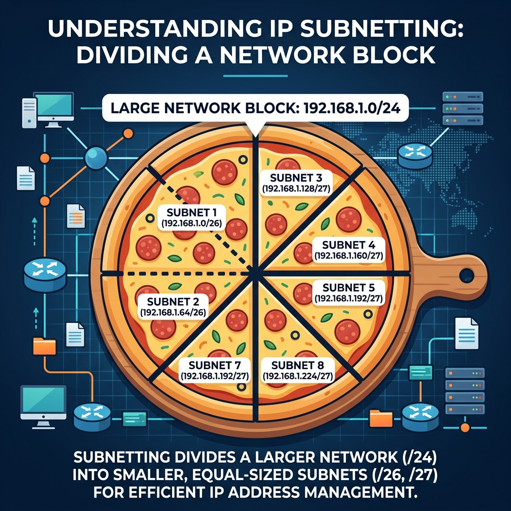
Tabel referensi lengkap CIDR dengan nilai biner (Bit Network: Biru, Bit Host: Oranye).
| CIDR | Subnet Mask (Biner) | Desimal | Usable IP |
|---|---|---|---|
| /8 | 11111111.00000000.00000000.00000000 | 255.0.0.0 | 16,777,214 |
| /9 | 11111111.10000000.00000000.00000000 | 255.128.0.0 | 8,388,606 |
| /10 | 11111111.11000000.00000000.00000000 | 255.192.0.0 | 4,194,302 |
| /11 | 11111111.11100000.00000000.00000000 | 255.224.0.0 | 2,097,150 |
| /12 | 11111111.11110000.00000000.00000000 | 255.240.0.0 | 1,048,574 |
| /13 | 11111111.11111000.00000000.00000000 | 255.248.0.0 | 524,286 |
| /14 | 11111111.11111100.00000000.00000000 | 255.252.0.0 | 262,142 |
| /15 | 11111111.11111110.00000000.00000000 | 255.254.0.0 | 131,070 |
| /16 | 11111111.11111111.00000000.00000000 | 255.255.0.0 | 65,534 |
| /17 | 11111111.11111111.10000000.00000000 | 255.255.128.0 | 32,766 |
| /18 | 11111111.11111111.11000000.00000000 | 255.255.192.0 | 16,382 |
| /19 | 11111111.11111111.11100000.00000000 | 255.255.224.0 | 8,190 |
| CIDR | Subnet Mask (Biner) | Desimal | Usable IP |
|---|---|---|---|
| /20 | 11111111.11111111.11110000.00000000 | 255.255.240.0 | 4,094 |
| /21 | 11111111.11111111.11111000.00000000 | 255.255.248.0 | 2,046 |
| /22 | 11111111.11111111.11111100.00000000 | 255.255.252.0 | 1,022 |
| /23 | 11111111.11111111.11111110.00000000 | 255.255.254.0 | 510 |
| /24 | 11111111.11111111.11111111.00000000 | 255.255.255.0 | 254 |
| /25 | 11111111.11111111.11111111.10000000 | 255.255.255.128 | 126 |
| /26 | 11111111.11111111.11111111.11000000 | 255.255.255.192 | 62 |
| /27 | 11111111.11111111.11111111.11100000 | 255.255.255.224 | 30 |
| /28 | 11111111.11111111.11111111.11110000 | 255.255.255.240 | 14 |
| /29 | 11111111.11111111.11111111.11111000 | 255.255.255.248 | 6 |
| /30 | 11111111.11111111.11111111.11111100 | 255.255.255.252 | 2 |
| /31 | 11111111.11111111.11111111.11111110 | 255.255.255.254 | 2 (P2P) |
| /32 | 11111111.11111111.11111111.11111111 | 255.255.255.255 | 1 (Host) |
Diberikan IP Host
192.168.19.16
yang berada di jaringan /24.
Tentukan blok subnetnya!
| Network ID: | 192.168.19.0 |
| IP Awal (Valid): | 192.168.19.1 |
| IP Akhir (Valid): | 192.168.19.254 |
| Broadcast: | 192.168.19.255 |
192.168.19.16
merupakan host ke-16 yang valid di jaringan ini.
Diberikan IP Host
162.148.139.126
yang berada di jaringan /26.
11111111.11111111.11111111.11000000
=
255.255.255.192
Karena kita memiliki 4 blok, mari kita susun rentangnya secara berurutan:
162.148.139.0162.148.139.1162.148.139.62162.148.139.63
162.148.139.64162.148.139.65162.148.139.126162.148.139.127
Lanjutan rentang 2 blok berikutnya:
162.148.139.128162.148.139.129162.148.139.190162.148.139.191
162.148.139.192162.148.139.193162.148.139.254162.148.139.255
162.148.139.126
masuk ke dalam rentang Blok 2.
Sebelum lanjut ke VLSM, mari kita uji pemahaman Anda:
192.168.1.70
/27.192.168.1.70 berada di rentang Blok ke-3 (64 - 95)!
Variable Length Subnet Mask
Metode subnetting konvensional (FLSM - Fixed Length Subnet Mask) memotong sebuah jaringan besar menjadi blok-blok subnet dengan ukuran yang sama persis.
Masalah dengan FLSM:
Seperti memotong kue ulang tahun secara tidak rata sesuai porsi perut masing-masing orang.
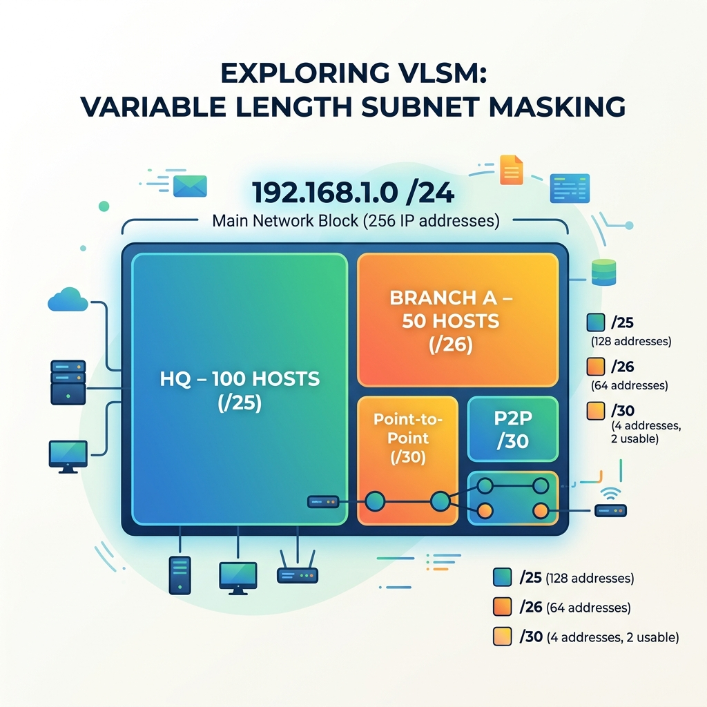
Sebuah perusahaan memiliki IP Public 192.168.10.0/24 (256 IP). Perusahaan tersebut memiliki 3 divisi dengan kebutuhan jumlah host sebagai berikut:
| Network ID | :
192.168.10.0/25
|
| First Host (IP Awal) | :
192.168.10.1
|
| Last Host (IP Akhir) | :
192.168.10.126
|
| Broadcast | :
192.168.10.127
|
| Network ID | :
192.168.10.128/26
|
| First Host (IP Awal) | :
192.168.10.129
|
| Last Host (IP Akhir) | :
192.168.10.190
|
| Broadcast | :
192.168.10.191
|
| Network ID | :
192.168.10.192/30
|
| First Host (IP Awal) | :
192.168.10.193
|
| Last Host (IP Akhir) | :
192.168.10.194
|
| Broadcast | :
192.168.10.195
|
Solusinya: IPv6 (128-bit)
Karena panjangnya 128 bit, menulis IP dalam bentuk desimal akan sangat panjang dan membingungkan. Oleh karena itu, IPv6 direpresentasikan menggunakan format Heksadesimal.
:).2001:0db8:85a3:0000:0000:8a2e:0370:73340 di depan (Leading Zeros) dapat dihilangkan. (Contoh:
0db8 menjadi db8)
0000 berturut-turut dapat disingkat dengan
:: (Hanya boleh digunakan sekali dalam satu IP).
Heksadesimal adalah sistem bilangan basis-16 (0-9 dan A-F). Setiap digit Heksadesimal mewakili tepat 4 bit (Nibble) bilangan biner.
11011011):
1101 dan 1011
1101 adalah D (13 dalam desimal)1011 adalah B (11 dalam desimal)
11011011 = Heksadesimal DB
Tabel Referensi 4-Bit:
| 0=0000 | 4=0100 | 8=1000 | C(12)=1100 |
| 1=0001 | 5=0101 | 9=1001 | D(13)=1101 |
| 2=0010 | 6=0110 | A(10)=1010 | E(14)=1110 |
| 3=0011 | 7=0111 | B(11)=1011 | F(15)=1111 |
Karena setiap Hextet pada IPv6 berisi 4 digit heksadesimal, kita bisa membedah 1 Hextet tersebut kembali menjadi 16-bit (4 x 4 bit) biner utuh.
2A0F):
2 | A | 0 | F
2 = 0010A = 10100 = 0000F = 1111
2A0F = Biner 0010 1010 0000 1111
2001:0db8::2001 = 0010 0000 0000 00010db8 = 0000 1101 1011 1000
IPv6 membuang beberapa fitur lama dari IPv4 dan membawa teknologi baru:
Subnetting IPv6 jauh lebih mudah dan logis daripada IPv4 karena ukurannya yang masif.
Struktur Umum IPv6 Unicast (/64):
Fakta mengejutkan: Kita hampir tidak perlu lagi repot menghitung VLSM di IPv6!
Secara umum ada 2 cara host mendapatkan IP Address:
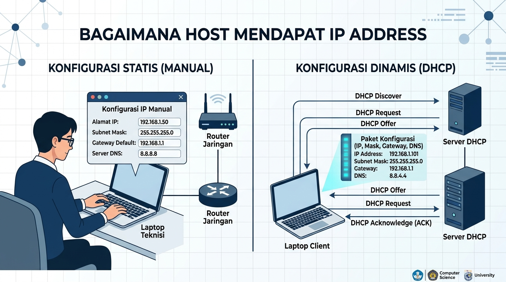
Proses DHCP berjalan di atas protokol UDP (Port 67 Server, Port 68 Klien).
0.0.0.0 (karena belum
memiliki IP).255.255.255.255
(Broadcast ke seluruh subnet).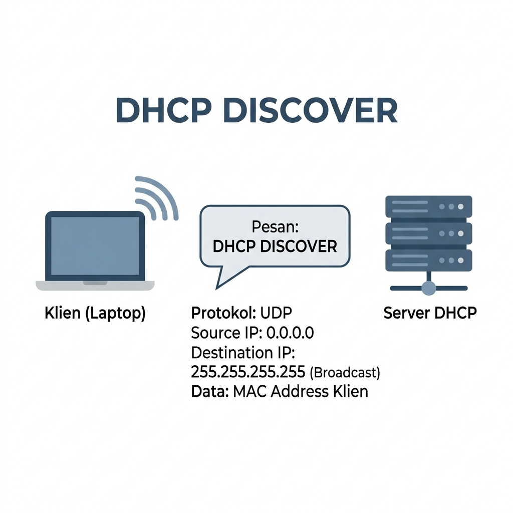
Proses DHCP berjalan di atas protokol UDP (Port 67 Server, Port 68 Klien).
192.168.1.50).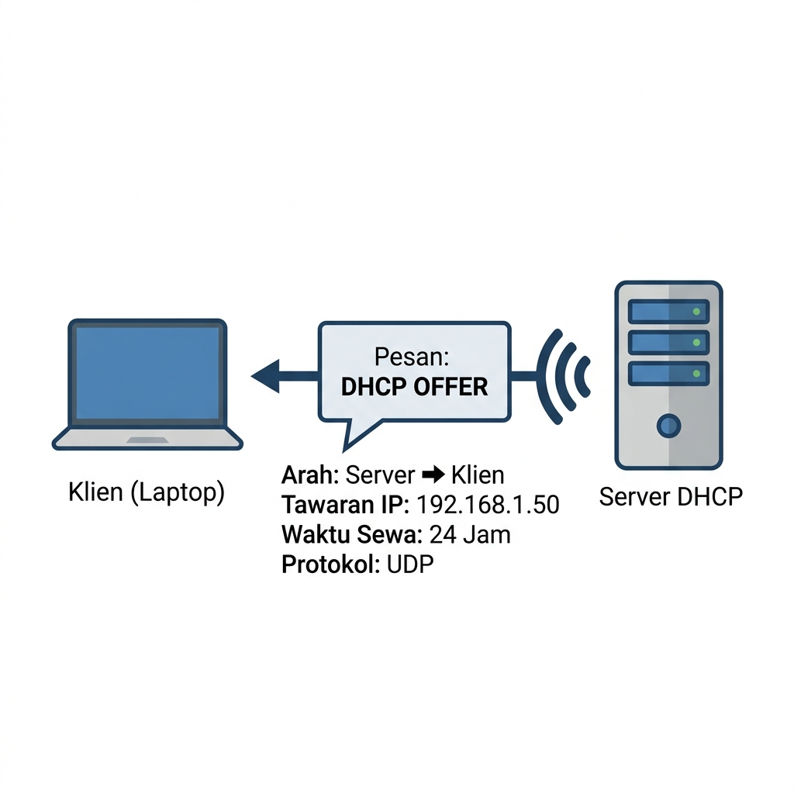
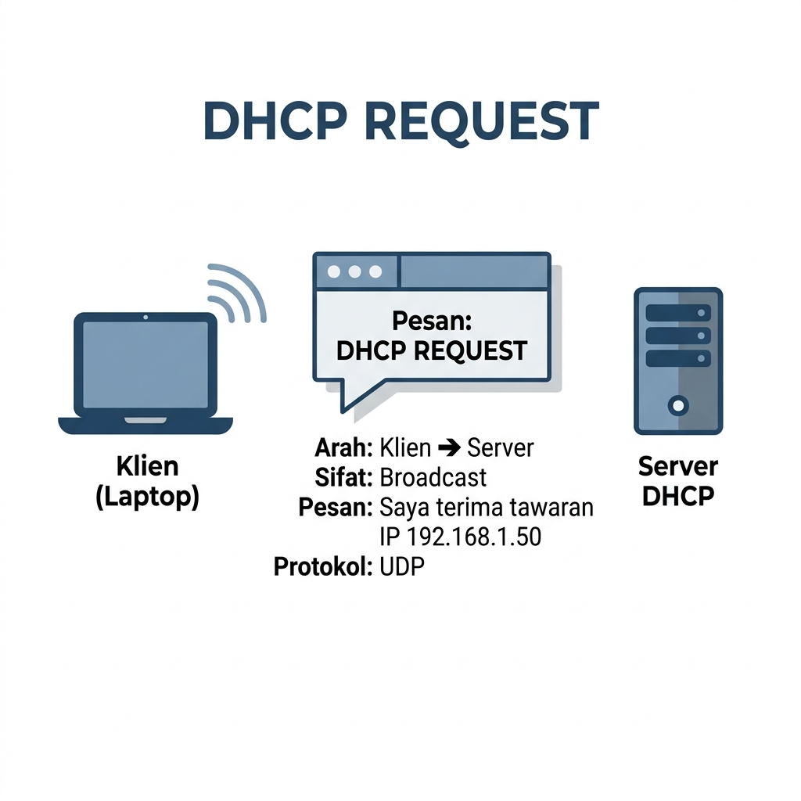
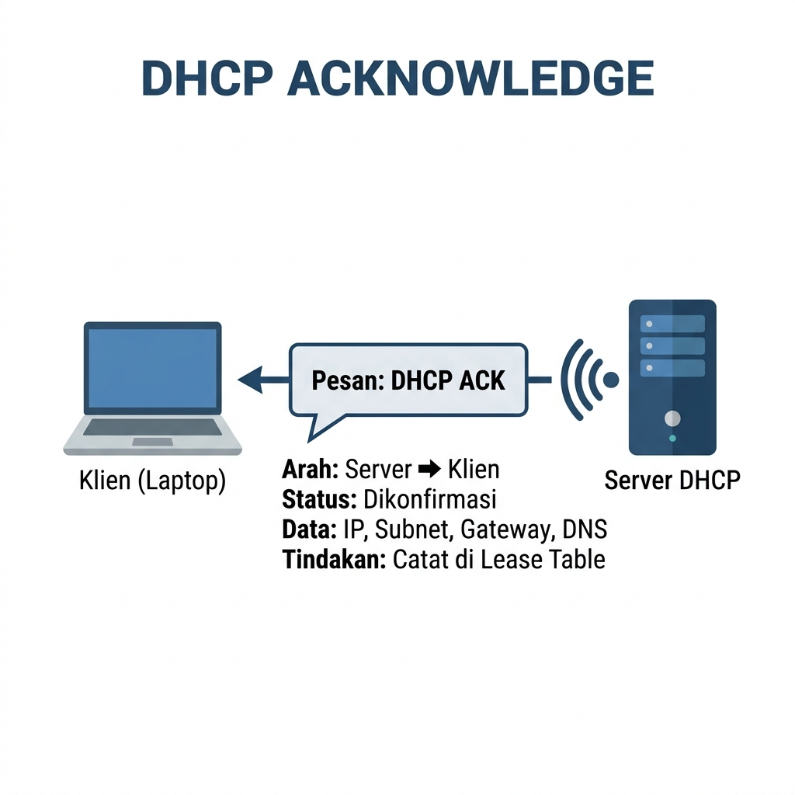
Jika DHCP DISCOVER klien tidak mendapat balasan (karena server mati atau kabel terputus), apa yang terjadi?
169.254.x.x, itu
mengindikasikan koneksi fisik/WiFi (layer 1 & 2) bagus, namun layanan DHCP di jaringan
rusak!
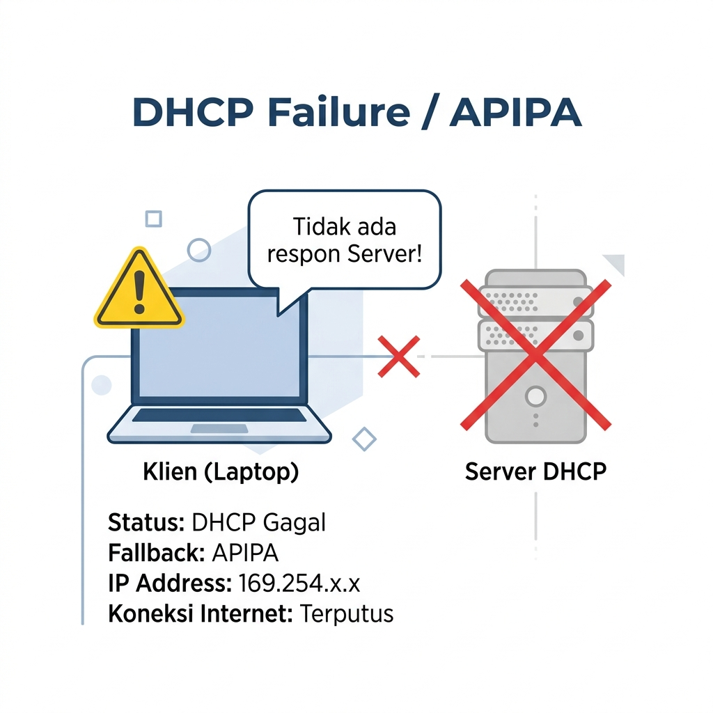
Network Layer & IPv4/v6
Subnetting, VLSM & DHCP
Dikerjakan analitik, ditulis tangan di kertas folio, difoto, dikirim ke e-learning.
1. Kantor pusat ITERA diberikan blok IP Public 202.10.50.0/24. Biro A membutuhkan alokasi untuk 60 host, Biro B butuh 30 host, dan Biro C butuh 10 host. Lakukan rancangan subnetting dengan metode VLSM (Variable Length Subnet Mask) agar alokasinya efisien (tidak buang-buang IP). Tuliskan detail Network ID, Subnet Mask (dalam notasi slash), Range IP Valid, dan Broadcast ID untuk setiap Biro!
2. Anda menyambungkan laptop ke WiFi publik di sebuah kafe. Anda dapat terhubung ke access point, namun ada tanda seru kuning "No Internet Access". Ketika dicek, IP Address laptop Anda adalah 169.254.x.x (APIPA). Berdasarkan pemahaman proses DHCP (DORA), jelaskan di tahap manakah proses konfigurasi IP Anda gagal, dan mengapa OS memberikan IP tersebut?
Pertemuan berikutnya: Routing Algorithms & OSPF
Referensi mandiri: Kurose & Ross Chapter 4 (Network Layer)